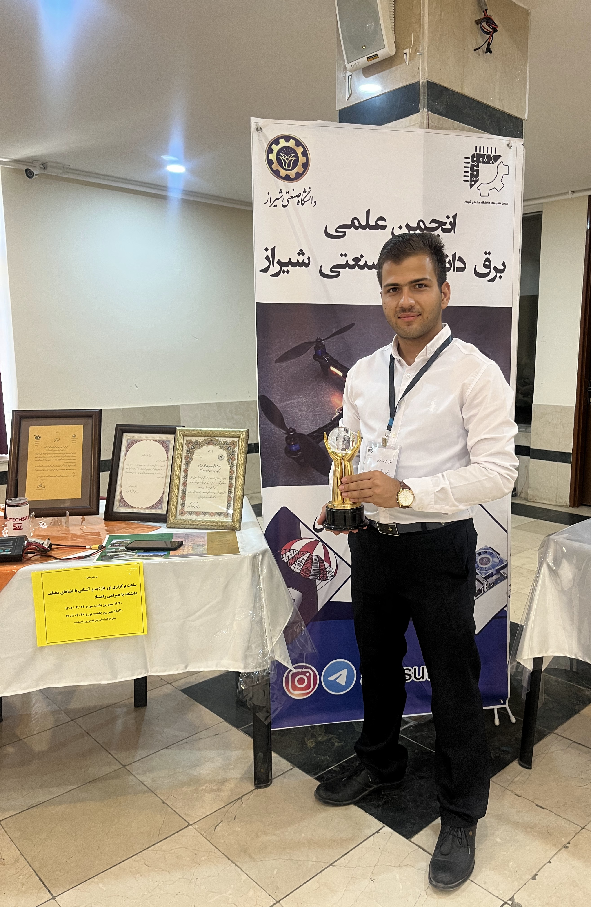

مهندس علیرضا جعفری
فارغ التحصیل کارشناسی مهندسی برق - گرایش کنترل و ابزاردقیق - دانشگاه صنعتی شیراز
رتبه اول گرایش کنترل دانشگاه صنعتی شیراز
پذیرفته شده بدون آزمون کارشناسی ارشد مهندسی برق گرایش سیستم های قدرت با سهمیه استعداد های درخشان در دانشگاه صنعتی شیراز
دانشجوی کارشناسی ارشد مهندسی برق - گرایش سیستم های قدرت - دانشگاه صنعتی شیراز
کارشناس تحلیل سیستم های انرژی - مرکز مطالعات انرژی و سیستم های قدرت - دانشگاه صنعتی شیراز
دستیار ویژه اساتید در برگزاری کلاس حل تمرین دروس پایه و تخصصی مهندسی برق در دانشگاه صنعتی شیراز